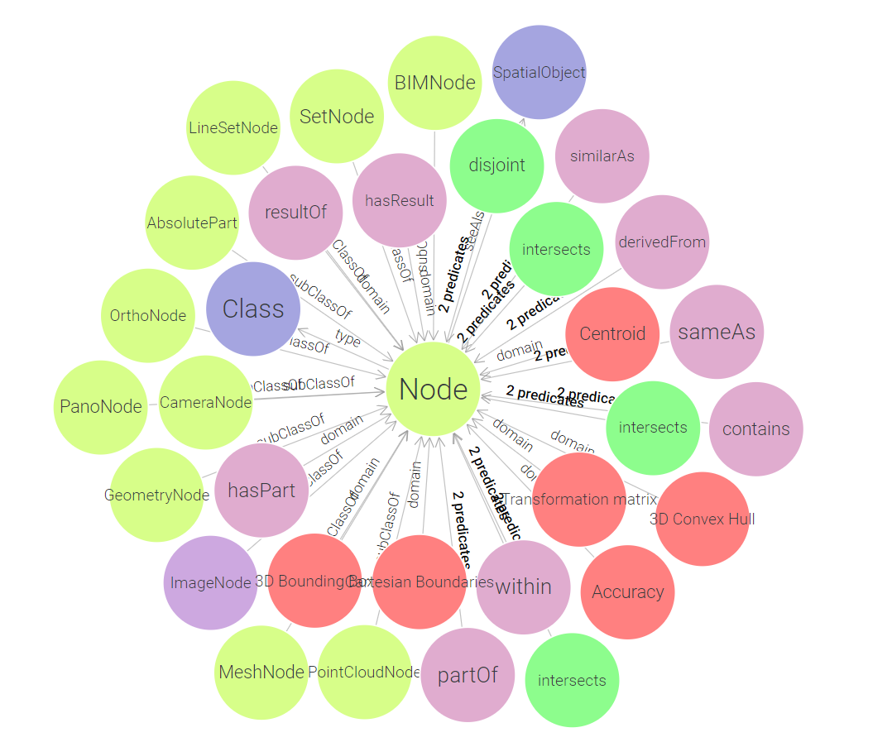

geomapi.nodes.node
Node is an abstract Python Class to govern the data and metadata of remote sensing data (pcd, images, meshes, orthomosaics). It is the base class for all other node classes. It contains the base RDF graph functionality and I/O from and to RDF files.

IMPORTANT: The Node class is an archetype class from which specific data classes (e.g., PointCloudNode) inherit. Do not use this class directly if you can use a child class with more functionality.
- Goals:
Govern the metadata and geospatial information of big data files in an accessible and lightweight format.
Serialize the metadata of remote sensing and geospatial files (BIM, Point clouds, meshes, etc.) as RDF Graphs.
Attach spatial and temporal analyses through RDF Graph navigation.
- class geomapi.nodes.node.Node(subject: rdflib.URIRef | None = None, graph: rdflib.Graph | None = None, graphPath: str | None = None, name: str | None = None, path: str | None = None, timestamp: str | None = None, resource=None, cartesianTransform: ndarray | None = None, orientedBoundingBox: open3d.geometry.OrientedBoundingBox | None = None, convexHull: open3d.geometry.TriangleMesh | None = None, **kwargs)
Bases:
object- __init__(subject: rdflib.URIRef | None = None, graph: rdflib.Graph | None = None, graphPath: str | None = None, name: str | None = None, path: str | None = None, timestamp: str | None = None, resource=None, cartesianTransform: ndarray | None = None, orientedBoundingBox: open3d.geometry.OrientedBoundingBox | None = None, convexHull: open3d.geometry.TriangleMesh | None = None, **kwargs)
Creates a Node from one or more of the following inputs.
- Args:
subject (URIRef, optional): A subject to use as identifier for the Node. If a graph is also present, the subject should be part of the graph.
graph (Graph, optional): An RDF Graph to parse.
graphPath (str, optional): The path of an RDF Graph to parse. If no subject is provided, the first subject of the graph is retained.
name (str, optional): A name of the Node. This is not a unique identifier but serves as non-functional description.
path (str, optional): A filepath to a resource.
timestamp (str, optional): Timestamp for the node.
resource (optional): Resource associated with the node.
cartesianTransform (np.ndarray, optional): The (4x4) transformation matrix.
orientedBoundingBox (o3d.geometry.OrientedBoundingBox, optional): The oriented bounding box of the node.
convexHull (o3d.geometry.TriangleMesh, optional): The convex hull of the node.
- Returns:
Node: An instance of the Node class.
- initialize(kwargs)
- property path
Path (str) of the resource of the node. If no path is present, you can use get_path() to reconstruct the path from either the graphPath or working directory.
- Args:
value (str): The new path for the node.
- Raises:
ValueError: If the path has an invalid type, path, or extension.
- property name
The name (str) of the node. This can include characters that the operating system does not allow. If no name is present, you can use get_name() to construct a name from the subject or path.
- Args:
self.path
self.subject
- property timestamp: str
mm:ss)) of the node. If no timestamp is present, use get_timestamp() to gather the timestamp from the path or graphPath.
- Features:
self.path
self.graphPath
- Type:
The timestamp (str(yyyy-MM-ddTHH
- property graphPath: str
The path (str) of graph of the node. This can be both a local file or a remote URL.
- property graph: rdflib.Graph
The Graph (RDFLib.Graph) of the node. If no graph is present, you can use get_graph() to parse the graph from a graphPath. Alternatively, you can use to_graph() to serialize the Nodes attributes to RDF.
- property subject: rdflib.URIRef
Get the subject (RDFLib.URIRef) of the node. If no subject is present, you can use get_subject() to construct it from a graph, name or path. Otherwise, a random guid is generated.
- Features:
self.name
self.graph
self.path
- property resource
The resource (mesh, image, etc.) of the node. If no resource is present, you can use get_resource(), to load the resource from a path or search it through the name and graphpath.
- Inputs:
self.path
self.name
self.graphPath
- property cartesianTransform: ndarray
The (4x4) transformation matrix of the node containing the translation & rotation. If no matrix is present, you can use get_cartesian_transform(), to gather it from the resource, orientedBoundingBox, or convexHull.
- Examples:
The pose of a mesh is determined by the average of its bounding vertices.
The pose of an image is at the center of the lens complex.
- Returns:
numpy.ndarray: The (4x4) transformation matrix.
- property orientedBoundingBox: open3d.geometry.OrientedBoundingBox
The o3d.orientedBoundingBox of the Node containing the bounding box of the geometry. If no box is present, you can use get_oriented_bounding_box(), to gather it from the resource, cartesianTransform or convexHull.
- Inputs:
Open3D.geometry.OrientedBoundingBox
Open3D geometry
set of points (np.array(nx3)) or Vector3dVector
- Returns:
o3d.geometry.OrientedBoundingBox: The oriented bounding box of the node.
- property convexHull: open3d.geometry.TriangleMesh
The convex hull of the Node containing the bounding hull of the geometry. If no convex hull is present, you can use get_convex_hull(), to gather it from the resource, cartesianTransform or orientedBoundingBox.
- Inputs:
Open3D.geometry.TriangleMesh
Open3D geometry
set of points (np.array(nx3)) or Vector3dVector
- Returns:
o3d.geometry.TriangleMesh: The convex hull of the node.
- get_metadata_from_graph(graph: rdflib.Graph, subject: rdflib.URIRef)
Convert the data contained in a graph to a set of node attributes. If the graph contains multiple subjects, it is reduced to the subject’s triples.
NOTE: The use of a SessionNode is advised when dealing with multi-subject graphs.
- Args:
self.graph (RDFlib.Graph): Graph to parse
self.subject (RDFlib.URIRef): The subject to parse the graph for
- get_subject() str
Returns and validates the current subject. If empty, a new subject is created based on an unique GUID.
- Returns:
subject (URIREF)
- get_timestamp()
Get the timestamp (str) of the Node. If no timestamp is present, it is gathered from the folowing parameters.
- Features:
self._timestamp
self._path
self._graphPath
datetime.datetime.now()
- Returns:
timestamp (str): ‘%Y-%m-%dT%H:%M:%S’
- get_name() str
Returns the name (str) of the Node. If no name is present, it is gathered from the following parameters.
- Features:
self._name
self._path
self._subject
- Returns:
name (str)
- set_cartesian_transform(value)
Helper method to set the cartesianTransform attribute.
- Args:
(4x4) full transformation matrix
(3x1) translation vector
- Raises:
ValueError: If the input is not a valid numpy array of shape (4,4) or (3,).
- get_cartesian_transform() ndarray
Get the cartesianTransform of the node from various inputs. if no cartesianTransform is present, it is gathered from the following inputs.
- Features:
self._resource
self._orientedBoundingBox
self._convexHull
- Returns:
cartesianTransform(np.ndarray(4x4))
- set_oriented_bounding_box(value)
Set the oriented bounding box for the Node.
- Args:
orientedBoundingBox (o3d.geometry.OrientedBoundingBox)
Open3D geometry
set of points (np.array(nx3)) or Vector3dVector
- get_oriented_bounding_box() open3d.geometry.OrientedBoundingBox
Gets the Open3D OrientedBoundingBox of the node. If no orientedBoundingBox is present, it is gathered from the following inputs.
- Features:
self._resource
self._convexHull
self._cartesianTransform
- Returns:
o3d.geometry.OrientedBoundingBox
- set_convex_hull(value)
Set the convex hull for the Node from various inputs.
- Args:
convexHull (o3d.geometry.TriangleMesh)
Open3D geometry
set of points (np.array(nx3)) or Vector3dVector
- get_convex_hull() open3d.geometry.TriangleMesh
Gets the Open3D Convex Hull of the node. If no convex hull is present, it is gathered from the following inputs.
- Features:
self._resource
self._orientedBoundingBox
self._cartesianTransform
- Returns:
o3d.geometry.TriangleMesh
- get_resource()
Returns the resource from the Node type. Overwrite this function for each node type to access more utilities.
- set_resource(value)
sets the resource for the Node type. Overwrite this function for each node type to access more utilities.
- get_center() ndarray
Returns the center of the node.
- set_path(value)
sets the path for the Node type. Overwrite this function for each node type to access more utilities.
- get_path() str
Returns the full path of the resource from this Node. If no path is present, it is gathered from the following inputs.
- Features:
self._path
self._graphPath
self._name
self._subject
- Returns:
path (str)
- get_graph()
Returns the graph of the Node. if no graph is present, it is gathered from the following inputs.
- Features:
self.graphPath
self._subject
- Returns:
graph (RDFlib.GRAPH)
- to_graph(graphPath: str = None, overwrite: bool = True, save: bool = False) rdflib.Graph
Converts the current Node variables to a graph and optionally save.
- Args:
graphPath (str, optional): The full path to write the graph to. Defaults to None.
overwrite (bool, optional=True): Overwrite current graph values or not
save (bool, optional=False): Save the graph to the self.graphPath or graphPath.
- save_graph(graphPath: str = None) bool
Serialize the graph in an RDF file on drive. The RDF graph will be stored in self.graphPath or provided graphPath (str).
- Args:
graphPath (str, optional)
- Raises:
ValueError: No valid graphPath if file/folder location is not found
ValueError: No valid extension if not in ut.RDF_EXTENSIONS
ValueError: Save failed despite valid graphPath and extension (serialization error).
- Returns:
bool: True if file is succesfully saved.
- transform(transformation: ndarray | None = None, rotation: ndarray | Tuple[float, float, float] | None = None, translation: ndarray | None = None, rotate_around_center: bool = True)
Apply a transformation to the Node’s cartesianTransform, resource, and convexHull.
- Args:
transformation (Optional[np.ndarray]): A 4x4 transformation matrix.
rotation (Optional[Union[np.ndarray, Tuple[float, float, float]]]): A 3x3 rotation matrix or Euler angles $(R_z,R_y,R_x)$ for rotation.
translation (Optional[np.ndarray]): A 3-element translation vector.
rotate_around_center (bool): If True, rotate around the object’s center.